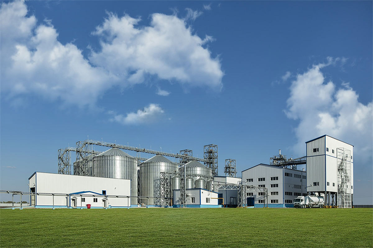
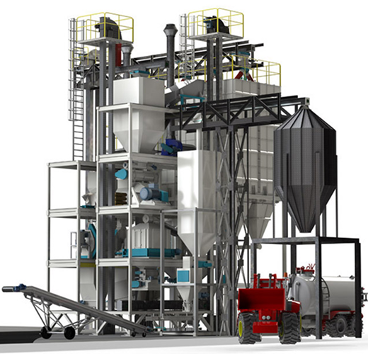

Yem Makineleri ve Yem Üretim Sistemleri
Yem Üretiminde Verimlilik, Kalite ve Teknoloji ile Geleceğe Adım Atın
Yem üretiminde verimlilik ve kaliteyi arttırmak için en gelişmiş teknolojiye sahip yem makineleri ve yem fabrikası sistemleri sunuyoruz.
Yılların tecrübesi ve uzman ekibimizle tüm ihtiyaçlarına uygun çözümler geliştiriyoruz.
Talep ettiğiniz ürünleri en verimli şekilde ve en önemlisi doğru firmalar ile çözüme kavuşturmak için çalışıyoruz.
Doğru üretici ve tedarikçilerle güçlü bir iletişim kurarak, ihtiyaçlarınıza en uygun ürün ve makineleri en verimli şekilde tedarik ediyoruz. Müşteri odaklı yaklaşımımızla, esnek ve tamamen ihtiyaca özel çözümler sunuyor, iş süreçlerinizi en verimli hale getiriyoruz. Ayrıca, 7/24 ulaşılabilirlik garantisiyle PMPEXİM olarak her an yanınızdayız.


Size Teklif Verebilmemiz İçin Gerekli Olan Bilgiler
- Yem fabrikasında üretilmek istenen yem türü yada türlerinin belirtilmesi.
- Yem fabrikasında üretilmek istenen yem kapasitesinin t/h biriminde belirtilmesi.
- Yem fabrikasında üretilmek istenen yem için hammadde çeşitliliğine ve tonaja dayalı gerekli dozajlama silolarının sayısı.
- Yem fabrikasında üretilmek istenen yem için melas katkısı yapılacak mı? Yapılacaksa ana melas tankı firmamızdan mı isteniyor.
- Yem fabrikasında üretilmek istenen yem için melas katkısı yapılacak mı? Yapılacaksa ana melas tankı firmamızdan mı isteniyor.
- Yem fabrikasında üretilmek istenen yem için tuz ve mermer tozu katkısı yapılacak mı?
- Yem fabrikasında üretilmek istenen yem türü Toz yem + Peletli yem + Granül yem şeklinde midir yada sadece toz yem mi yapılacaktır ?
- Yem fabrikasında üretilen yem veya yemlerin stoklanması için istenilecek mamül silolarının sayı ve kapasiteleri belirtilmelidir.
- Yem fabrikasında üretilen yem otomatik paketleme makinasında çuvallanacaktır. Ayrıca dökme yem alma ihtiyacı duyulacaksa dökme yem ünitesinin yapılması belirtilmelidir.
- Araç tartım istasyonu ( tır kantarı ) isteniyor mu ?
- Yem fabrikasının kurulumu için mevcutta bir bina var mıdır. Yoksa yeni yapılacaksa istenilen tesisin yapısı yatay mı veya dikey mi bina planlanıyor. Yapılacak bina beton mu yoksa çelik binamı düşünülüyor. Ve ayrıca bina yapım sorumluluğu alıcı firma sorumluluğunda mıdır?
- Araç boşaltma istasyonu (tır lifti) isteniyor mu ?
- Yem fabrikasının komuta edilmesi için manuel mi, yarı otomasyon mu yada full otomasyon şeklinde mi çalıştırılmak isteniyor ?
- Yem fabrikasının çalıştırılması için ihtiyaç duyulabilecek hammadde siloları mevcutta var mıdır ? Eğer yoksa ve bizden talep edilecekse hammadde silo sayı ve kapasitelerinin belirlenmesi.